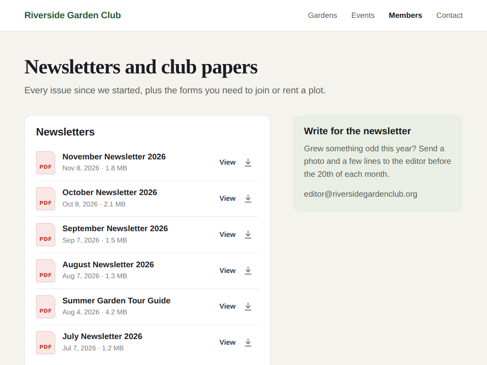

PDF Viewer: Document Library
PDF viewer that lists every file in a folder
- Lists every PDF in a Media Manager folder
- New files appear on the page by themselves
- Visitors read PDFs on the page or download
- Folders as tabs, search and cards (Premium)

What it does
Put your PDFs in a folder of your Media Manager, pick that folder once, and this widget lists every document in it on your page, newest first. Add next month's newsletter to the folder and it shows up at the top of the list the next time someone opens the page. Nothing to paste or upload twice.
It suits a newsletter archive, meeting minutes, school letters, menus, price lists, forms to print, or the PDFs an old PDF viewer used to show.
Each row shows the file name as the title, the date it was added and its size. On a computer, View opens the PDF in a reader over the page, with buttons to download it or open it in a new tab. On a phone the file opens in the phone's own viewer. Word, Excel and PowerPoint files are listed too and open or download in one tap. You can also show the newest PDF open above the list, so the widget works as a single PDF viewer.
Only public files are listed. Private files in the folder are never shown.
The free plan shows one folder as a list. Premium shows several folders as tabs, adds a search box, a card layout, sorting by name or date, a "New" label on recent files and the option to hide the download button, and removes the credit link.
Price
Free
- One folder as a document list
- PDF reader over the page
- Your heading, colours and font
- Small credit link
Premium
$4/month, yearly 20% off
- Several folders as tabs
- Search box, cards and sort order
- "New" label on recent files
- Remove the credit link